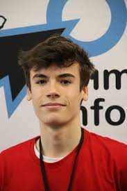

Competitive programmer, ML practitioner, and algorithm enthusiast — enrolled in the selective CFIS dual-degree program at UPC.
I'm a Mathematics and Data Science Engineering student at the Polytechnic University of Catalonia (UPC), enrolled in the highly selective CFIS program — simultaneously pursuing two full degrees.
My core interests sit at the intersection of algorithm design and machine learning. I love competitive programming and apply those skills to real-world data challenges, hackathons, and personal projects.
Beyond the screen, I volunteer as a problem setter for the Spanish Olympiad in Informatics and as a youth counselor, fostering values like equality and empathy.
Built an algorithm to optimize stock trading transactions and maximize profits under real market conditions during a 24h hackathon.
Developed a machine learning pipeline to classify hospital supply data from real clinical records, helping optimize resource allocation.
A Python app that helps teachers automatically form balanced student groups using heuristic algorithms, reducing manual effort each semester.
Propose, design, and rigorously test problems for the National Spanish Olympiad in Informatics — difficulty calibration and correctness.
Designed and built from scratch using semantic HTML and CSS — no frameworks. Focused on clean layout, responsiveness, and clear information hierarchy.
A personal library of optimized C++ templates used in competitive programming contests — data structures, algorithms, and utility snippets refined through hundreds of problems.
Algorithmic trading bot developed during HackUPC 2024. Optimizes stock transaction decisions to maximize profit under real market simulation conditions.
A collection of ML experiments and projects in Jupyter Notebooks — covering model training, data analysis, and applied deep learning with PyTorch and TensorFlow.
ML pipeline built to analyze and classify real hospital supply data. Developed in collaboration with a team during the FME Datathon Barcelona 2023.
A written research project exploring practical applications of classical algorithms outside of competitive programming — written in LaTeX.
Lab work from the Computer Architecture course at UPC — low-level programming exercises in Assembly exploring memory, registers, and processor instructions.
I'm open to internship opportunities, research collaborations, or just interesting conversations about algorithms and data. Reach out — I respond quickly.